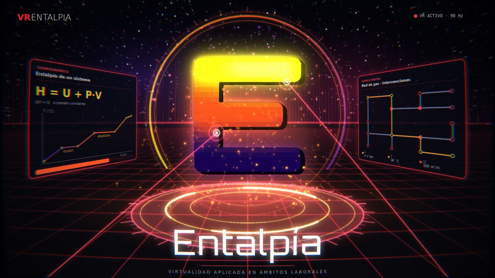

VR
ENTALPIA
⌂
Inicio
📐
Mis planos
⛶
Pantalla completa
📋
Panel
✕
Salir
📱
Visor celular
👓
Entrar en VR
Arrastra para mirar · Clic en una tarjeta para abrirla · Rueda del mouse sobre una fila para desplazarla · Esc para volver
✕ Salir del visor
📐 Mis planos de Isoflux
✕
📂 Abrir archivo .json
Un dibujo guardado desde Isoflux. Se abre solo en este dispositivo; no se sube a ninguna parte.

Cargando el mundo virtual…
↻ Reintentar